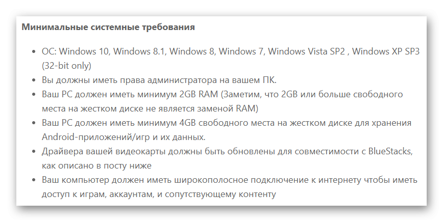

Как ускорить работу Bluestacks
На сегодняшний день практически все пользователи знакомы с эмулятором BlueStacks. Ведь благодаря ему на ПК создается полнофункциональная среда, где возможно запустить различные приложения или игры, которые были скачаны из Google Play. Данный эмулятор замечательно поддерживается на различных платформах, регулярно улучшается и последняя версия вышла специально для любителей компьютерных игр. Безусловно, случается и такое, что программа начинает тормозить. Сегодня мы разберемся, как сделать так, чтобы работа BlueStacks была ускорена.
| Почему Bluestacks может тормозить ↓ | Как можно повысить производительность ↓ |
В связи с чем BlueStacks может тормозить
Безусловно, оптимизация BlueStacks делает свое дело. Благодаря новому релизу, эмулятор стал намного лучше, быстрее, надежнее, практически избавился от всевозможных ошибок.
Но хочется отметить, что задача совместить различные операционные системы – очень непростая, поскольку может существовать большое количество вариаций конфигураций платформ. Да, проблемы будут, но уже не в таком количестве, если начать пользоваться последней версией.
Также BlueStacks может зависать еще по ряду причин:
{kind=link}
● системные требования персонального компьютера не соответствуют;
● система слишком загружена;
● ошибки в системном реестре компьютера.
В случае, если эмулятор начал зависать, то для решения данной проблемы не нужно вызывать программиста. Достаточно произвести некоторые действия и проблема будет очень просто решена.
Проверить параметры ПК
В начале необходимо убедиться, что ваш персональный компьютер полностью соответствует всем системным требованиям. Данная процедура является довольно-таки несложной, но в соответствии со статистикой, многие беды с работой BlueStacks связаны именно с этой областью. Естественно, все мы можем быть невнимательными и попросту упустить требования, которые прописывают разработчики. Всегда обращайте внимания на этот пункт на сайте.
Хочется напомнить, что в соответствии со старыми версиями данных эмуляторов, любые процессоры, предназначенные для BlueStacks, должны быть с поддержкой аппаратной виртуализации, тактовой частотой не ниже 2 ГГц, а сама оперативная память — не меньше 1 Гб. Помните, что все требования напрямую зависят от версии BlueStacks.
Отключите все лишние процессы
{kind=link}
Даже если у вас объем оперативной памяти является очень большим, это не является гарантией того, что работа программы будет безупречной. В связи с этим, после того, как вы проведете проверку всех параметров, обязательно определить и отключить процессы, способны перегрузить операционную систему компьютера. Помните, что эмулятор использует исключительно выделенный объем памяти, и часть его занимают игры и приложения. Именно там можно обнаружить то, что вам уже не нужно. Просто зайдите во вкладку «Диспетчер задач» и поняв ситуацию в целом, просто отключите все ненужные процессы и включите антивирус. Данную процедуру важно выполнять очень аккуратно, поскольку можно навредить и эмулятору и самому компьютеру.
Перезапустите эмулятор
Всем приложениям свойственно иногда зависать. И, чтобы разобраться с данной проблемой, достаточно перезагрузить BlueStacks. Таким образом можно значительно ускорить работу программы.
Для рестарта необходимо:
● закрыть рабочее окно;
● войти в «диспетчер задач» и завершить все активные процессы.
После этого можно открыть программу. Помимо перезагрузки самой программы, можно перезапустить и сам компьютер. Таким образом вы сможете освободить ресурсы, и эмулятор станет работать намного быстрее.
Установите и обновите драйвера
Еще одной причиной того, что эмулятор работает нестабильно, может быть наличие старых драйверов. Программа вообще не будет работать, если драйверов нет. В связи с этим, необходимо регулярно обновлять их. Проверить состояние драйверов можно в «Диспетчере устройств».
{kind=link}
Для того, чтобы проверить, можно ли установить последнюю версию необходимо:
● зайти в раздел «Видеоадаптеры»;
● перейти по названию;
● выбрать вкладку «Драйвер».
В случае, если окно окажется пустым, то в таком случае системе не удалось обнаружить драйвер и его необходимо загрузить.
Как переустановить эмулятор BlueStacks
Случаются ситуации, когда после проверок все, итак, в порядке, но даже перезапуск системы не дает никакого результата. Эмулятор продолжает зависать. В таком случае можно воспользоваться радикальным методом – удалить и повторно установить BlueStacks. Таким образом произойдет исключение несистемных ошибок, которые накопились в процессе использования.
Удаление эмулятора является очень простой процедурой, но необходимо точно все сделать. Главной задачей является не оставить на ПК частицы старой программы, в таком случае произойдет конфликт двух разных программ.
Каким образом повысить производительность эмулятора
Если эмулятор довольно-таки сильно перегружает процессор ПК, независимо от версии, необходимо изучить характеристики производительности при помощи следующих шагов:
● изменить размер расширения;
● изменить доступность BlueStacks по количеству памяти RAM.
Благодаря данному эмулятору есть возможность использовать стандартные приложения, предназначенные для телефона, но уже с компьютера. Поскольку у приложения бесплатное распространение и русскоязычный интерфейс, то оно является очень доступным. Поддержка 3D – игр также значительно увеличивает огромную аудиторию. Помимо этого, эмулятор был оценен и игроками, у которых тяжелый кэш игр, и также, без BlueStacks не могут обойтись разработчики программного обеспечения. Данный эмулятор подойдет тем, кто хочет быть при любых обстоятельствах быть подключенным к миру приложений.
Добрый вечер, а совсем чайник справится? Очень люблю игры на андроиде, хочу и на винде в них играть, но боюсь не справиться.
недавно узнала о данном эмуляторе. Теперь активно им пользуюсь.
Очень удобный и понятный сайт.
Эта версия более удобная, спасибо!
Со второй попытки получилось.
Не для старого железа, однако, но работает на 2 Гб.